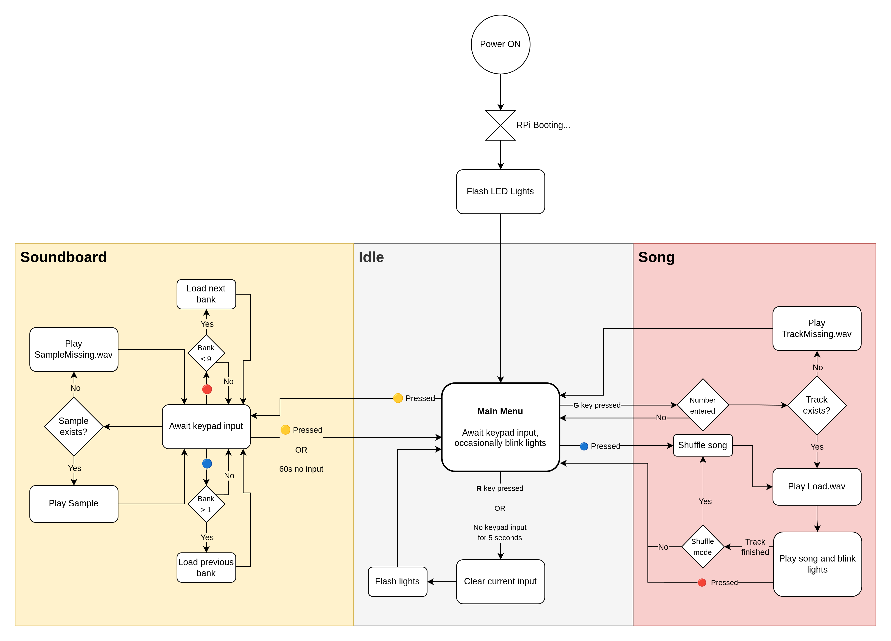

Flowchart
The flowchart is simplified and does not reflect all the details of the code. It serves as a high-level overview of the jukebox's functionality.
Powering on the Jukebox
To power the jukebox on or off, flip the switch located on the power strip at the back-left side.
Note: It is normal to hear a loud "pop" sound when flipping the switch.
Once powered on, the jukebox will require a short period to boot. It is ready to use when the lights begin flashing.
Volume Control
At boot, the jukebox will start at its lowest volume. To adjust the volume, use the volume buttons located at the back-right side.

Selecting a Song
Enter the song number using the keypad. To confirm your selection, press the G key. The jukebox will begin playing your chosen song.
To cancel your current entry, press the R key.
Playing a Random Song
To play a random song, press the 🔵 BLUE key. The jukebox will select a random song from its library.
Aborting a Song
To stop a song currently playing, press the 🔴 RED key. This will immediately return you to the main menu.
Soundboard Mode
To activate soundboard mode, press the 🟡 YELLOW key. In this mode, the keypad functions as a soundboard.
The jukebox has 10 soundboard banks. Upon entering soundboard mode, Bank 1 is automatically selected. Switch between banks using:
- 🔴 RED - Next bank
- 🔵 BLUE - Previous bank
To exit soundboard mode, press the 🟡 YELLOW key again. Alternatively, soundboard mode will automatically exit after 60 seconds of inactivity.
Uploading Songs
To upload songs to the jukebox:
- Ensure the jukebox is powered on
- Connect to the TuDo WiFi
- Open jukebox.local in your web browser
- Select your desired track number
- Upload your song either via file or URL (YouTube, Spotify, SoundCloud etc.)
Adding Samples
This shall remain a secret ;)